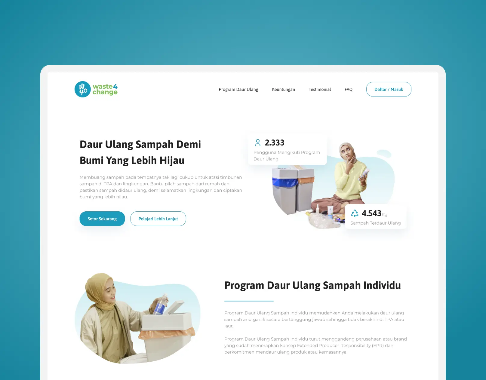
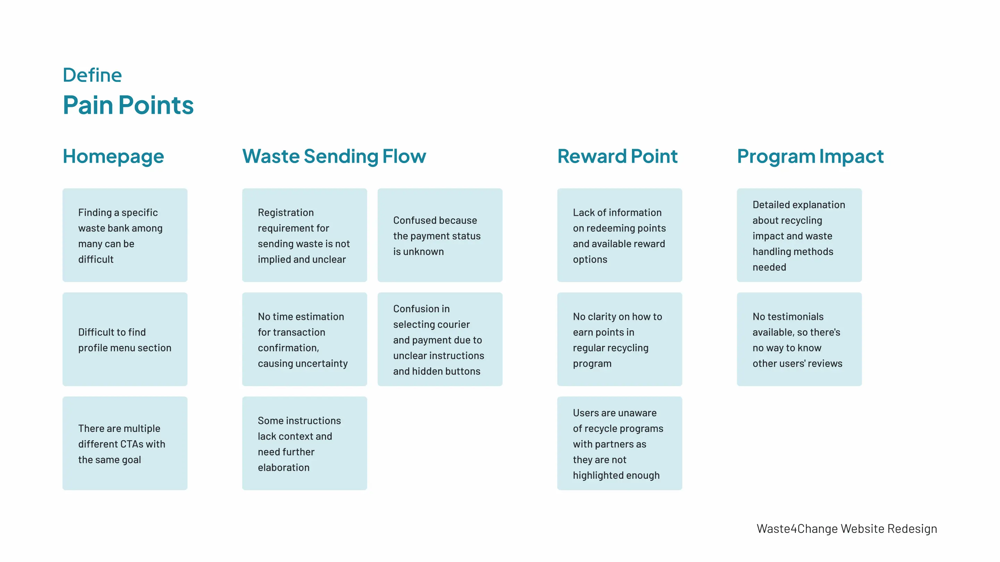
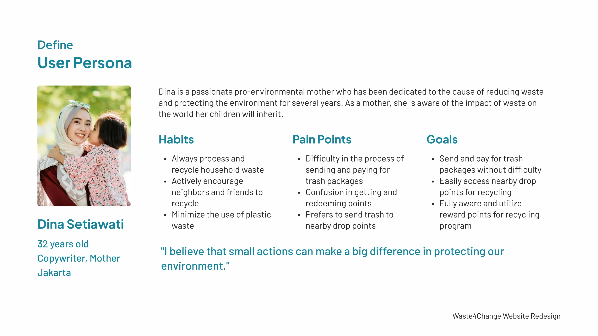
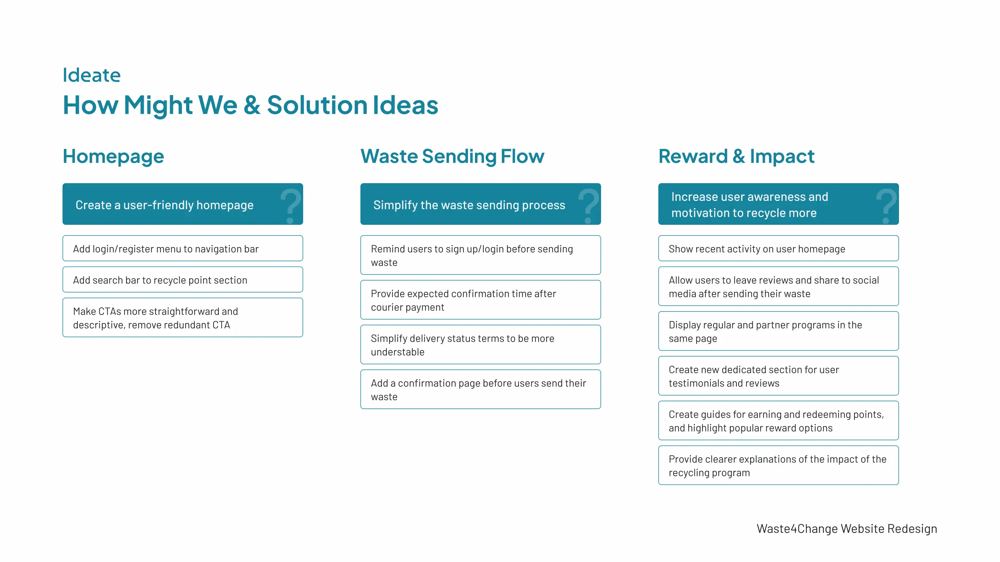
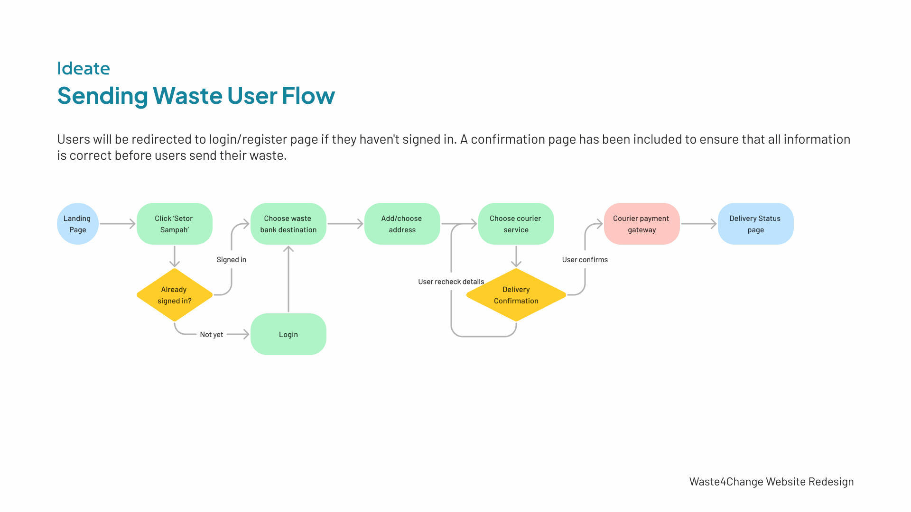
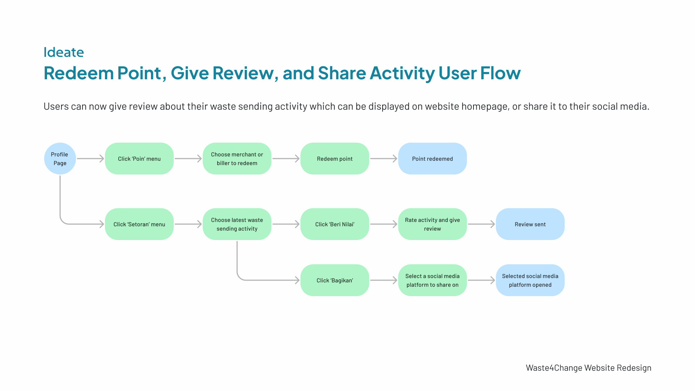
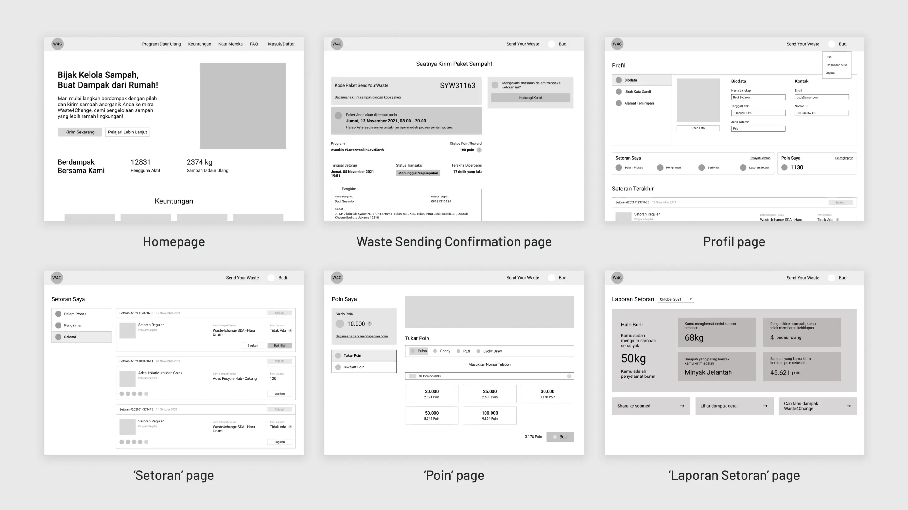
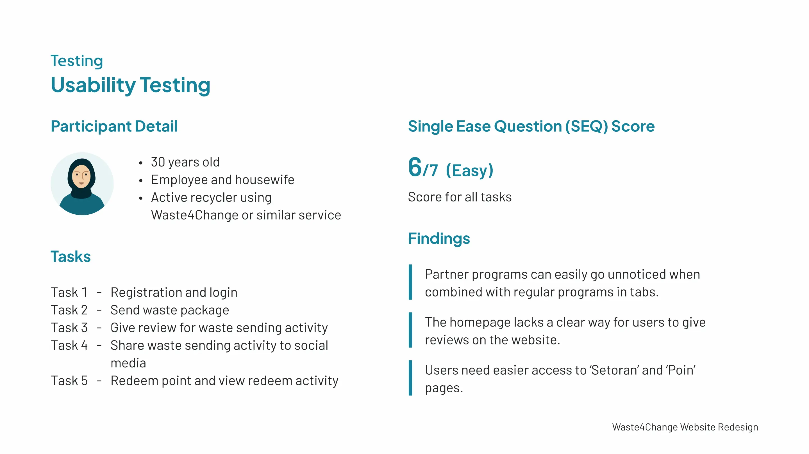
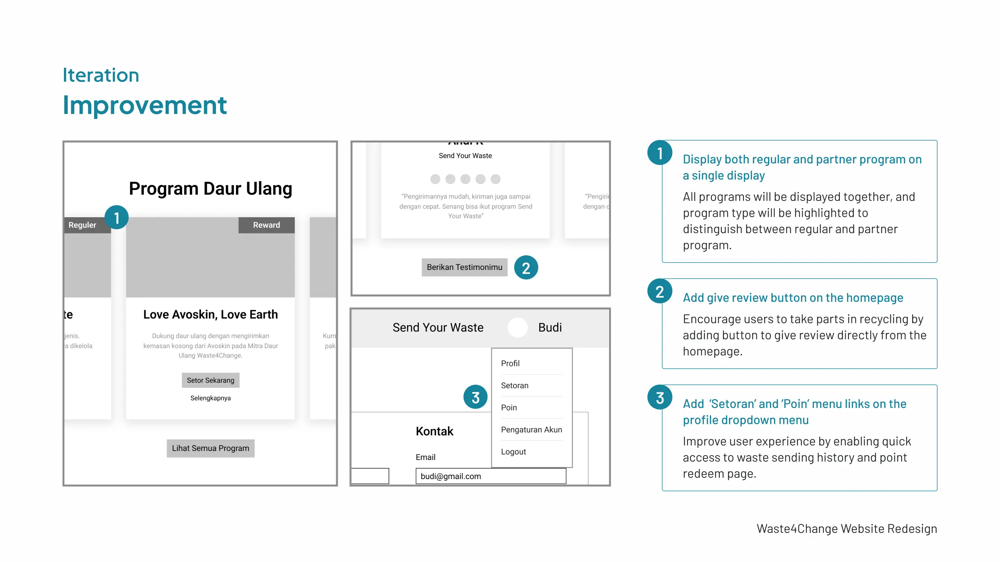

Encourage user interest in waste recycling
Waste4Change Website - UX Research

- Project Type
- A self-initiated exploration project.
- Period
- November - December 2021
- About
- Waste4Change is a company that specializes in handling waste for corporations and individuals in Indonesia. Recycle With Us is one of its services provided for individuals, where everyone can send their waste to be processed responsibly.
- Role
- UX Researcher & UX Designer
- Tools and Technology
- Figma, Google Meet, Google Forms, Google Docs
Competitive Analysis
Waste4Change compared with three other waste recycling services
| Criteria | Waste4Change | Octopus | Rekosistem | Duitin |
|---|---|---|---|---|
| Reward Points |
|
|
|
|
| Coverage Area | Jakarta, Bogor, Bekasi, Sidoarjo, Semarang | Jabodetabek, Makassar, Bali | Jabodetabek, Surabaya, Bandung | Jabodetabek, Jogja, Bandung |
| Costs | Depends on shipping fees | Free pick up | Free | Free pick up |
| Waste Delivery Method | Waste can be sent or picked up by a delivery courier or can be dropped off at the waste bank by users | Users can schedule a pickup time with pickers to collect their waste with no minimum | Users can drop off their waste to the nearest drop point | Users can schedule a pickup time with pickers to collect their waste, with a minimum of 3 kg |
| Impact Report |
|
|
|
|
Define
Pain Points
- Homepage
-
- Finding a specific waste bank among many can be difficult
- Difficult to find profile menu section
- There are multiple different CTAs with the same goal
- Waste Sending Flow
-
- Registration requirement for sending waste is not implied and unclear
- No time estimation for transaction confirmation, causing uncertainty
- Some instructions lack context and need further elaboration
- Confused because the payment status is unknown
- Confusion in selecting courier and payment due to unclear instructions and hidden buttons
- Reward Point
-
- Lack of information on redeeming points and available reward options
- No clarity on how to earn points in regular recycling program
- Users are unaware of recycle programs with partners as they are not highlighted enough
- Program Impact
-
- Detailed explanation about recycling impact and waste handling methods needed
- No testimonials available, so there's no way to know other users' reviews

User Persona
- Profile
- Dina Setiawati, 32 years old, copywriter and mother, based in Jakarta. Dina is a passionate pro-environmental mother who has been dedicated to the cause of reducing waste and protecting the environment for several years. As a mother, she is aware of the impact of waste on the world her children will inherit.
- Habits
-
- Always process and recycle household waste
- Actively encourage neighbors and friends to recycle
- Minimize the use of plastic waste
- Pain Points
-
- Difficulty in the process of sending and paying for trash packages
- Confusion in getting and redeeming points
- Prefers to send trash to nearby drop points
- Goals
-
- Send and pay for trash packages without difficulty
- Easily access nearby drop points for recycling
- Fully aware and utilize reward points for recycling program
- Quote
- “I believe that small actions can make a big difference in protecting our environment.”

Ideate
How Might We & Solution Ideas
- Homepage
-
Create a user-friendly homepage
- Add login/register menu to navigation bar
- Add search bar to recycle point section
- Make CTAs more straightforward and descriptive, remove redundant CTA
- Waste Sending Flow
-
Simplify the waste sending process
- Remind users to sign up/login before sending waste
- Provide expected confirmation time after courier payment
- Simplify delivery status terms to be more understandable
- Add a confirmation page before users send their waste
- Reward & Impact
-
Increase user awareness and motivation to recycle more
- Show recent activity on user homepage
- Allow users to leave reviews and share to social media after sending their waste
- Display regular and partner programs in the same page
- Create new dedicated section for user testimonials and reviews
- Create guides for earning and redeeming points, and highlight popular reward options
- Provide clearer explanations of the impact of the recycling program

Sending Waste User Flow
Users will be redirected to login/register page if they haven't signed in. A confirmation page has been included to ensure that all information is correct before users send their waste.

Redeem Point, Give Review, and Share Activity User Flow
Users can now give a review about their waste sending activity, which can be displayed on the website homepage, or share it to their social media.

Prototype
Wireframes
Low-fidelity wireframes for the core experience of Recycle With Us program.
- Homepage
- Encourage people to recycle their waste with clear calls to action, showing how it helps the environment, what they can gain, and how more people joining makes a bigger difference. Include links to learn more about the program and make it easy to join.
- Waste Sending Confirmation page
- Make all the important details easy to find, including the package code, scheduled pickup time, potential rewards, and transaction status with its latest update. Place the Contact Us button at the top so users can quickly get help if something goes wrong in the recycling process.
- Profil page
- Along with user details, this page shows all waste submissions, their current statuses, and the reward points collected.
- 'Setoran' page
- Lists the user's waste submissions. Each entry shows the program, the drop point, and the points earned, with buttons to share it or give a review.
- 'Poin' page
- Shows the point balance and a link that explains how to earn points. Users can see their points history and redeem it for phone credit, Gopay, PLN, or a lucky draw.
- 'Laporan Setoran' page
- A monthly individual report that shows the user's total waste sent, the carbon emission saved, the number of recyclers helped, the most-sent waste type, and the points earned. Users can share their reports on social media to show their contributions and encourage others to do the same.

Testing
Usability Testing
- Participant Detail
-
- 30 years old
- Employee and housewife
- Active recycler using Waste4Change or similar service
- Tasks
-
- Task 1 Registration and login
- Task 2 Send waste package
- Task 3 Give review for waste sending activity
- Task 4 Share waste sending activity to social media
- Task 5 Redeem point and view redeem activity
- Single Ease Question (SEQ) Score
-
6/7 (Easy)
Score for all tasks
- Findings
-
- Partner programs can easily go unnoticed when combined with regular programs in tabs.
- The homepage lacks a clear way for users to give reviews on the website.
- Users need easier access to 'Setoran' and 'Poin' pages.

Iteration
Improvement
- Display both regular and partner program on a single display
- All programs are displayed together, and the program type is highlighted to distinguish between regular and partner program.
- Add give review button on the homepage
- Encourages users to take part in recycling by adding a button to give a review directly from the homepage.
- Add 'Setoran' and 'Poin' menu links on the profile dropdown menu
- Improves user experience by enabling quick access to waste sending history and the point redeem page.
